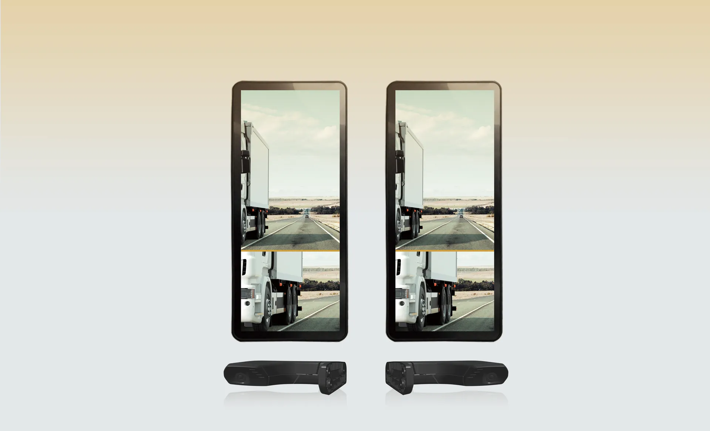

2026年北京國際車展期間，新格局下的汽車零部件企業出海論壇暨2026「弗戈出海先鋒獎」頒獎典禮在北京國際展覽中心圓滿舉辦。
 《汽車製造業》主編龔淑娟女士致辭
《汽車製造業》主編龔淑娟女士致辭
寅家科技憑藉VT-CMS電子外後視鏡系統從眾多參選企業中脫穎而出榮獲弗戈出海先鋒獎·汽車零部件技術出海創新獎，以硬核自研技術與全球化服務能力，再獲行業認可。

本次獎項由北京國際汽車展覽會組委會、中國貿促會汽車行業分會、中國機械國際合作股份有限公司、機械工業信息研究院、德國弗戈傳播集團聯合主辦，旨在表彰在全球化佈局中具備技術創新、規模落地、市場引領的標杆企業，樹立中國汽車品牌出海典範。
2026年1-3月，中國汽車出口222.6萬輛，同比增長56.7%。其中，新能源汽車出口成為重要增長引擎，出口95.4萬輛，同比增長1.2倍；傳統燃料汽車出口127.1萬輛，同比增長29.9%(數據來源於：中國汽車工業協會)。
立足技術，堅持創新
傳統光學後視鏡存在視野盲區大、惡劣天氣看不清、風阻高、能耗高等行業共性難題。寅家科技VT-CMS電子外後視鏡系統，以數字化方案，解決傳統後視鏡行業痛點：
• 自研感知+算法，全天候清晰可見
搭載自研高精度攝像頭與成熟視覺算法，一定程度消除側後方視野遮擋，強光、夜間、雨雪、大霧等複雜場景依然穩定清晰，提升行車安全。
• 與智能輔助駕駛深度聯動，構建多維安全防護
依託全棧自研技術，可與車輛智能輔助駕駛系統協同，實現更主動的安全守護。
• 輕量化低風阻，顯著降能耗
數字化成像+輕量化結構設計，有效降低風阻與能耗，有助於滿足全球乘用、商用車型節能需求。

全棧自研+全球佈局：真正服務車企全球化
此次獲獎不僅展現了寅家科技VT-CMS電子外後視鏡系統產品力，更體現了寅家從“全棧自研+全球佈局”的重要戰略佈局。寅家VT-CMS 已完成全球主流市場法規認證，具備量產交付能力：
• 通過中國GB 15084-2022國家標準測試
• 通過歐盟ECE R46權威認證
• 可有效縮短車企出海開發週期、降低驗證成本
目前，寅家科技VT-CMS電子外後視鏡系統已獲得多個境外項目定點，與TATA DAEWOO MOBILITY等海外主流主機廠建立穩定合作，進入全球車企供應鏈體系。
獲獎不是終點，而是新起點。寅家科技持續深耕智能感知(感知系統VT-Sensing、慣導定位VT-Navi)和智能決策和控制(VT-Vulcan®)，以更創新的自研技術、更合規的全球方案、更高效的本地化服務，深度融入全球汽車產業鏈，為全球汽車行業提供可靠、可規模化、可持續的技術支撐。
寅家正在以自研技術，開拓出海新格局。